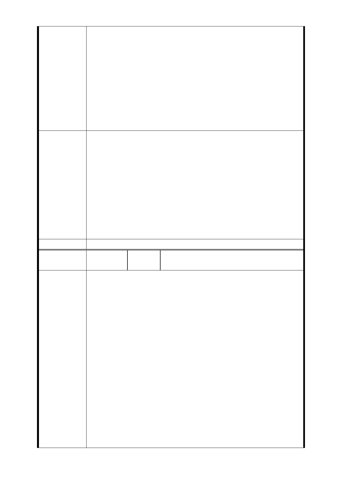

（一）堅決反對南門市場臨時市場遷建於我等住戶的捷四用
地上。
（二）堅決反對南門市場遷建，我等住戶竟須配合將先拆遷
。
（三）以捷四基地計畫為核心，儘速執行捷運萬大線 LG01
站土地開發案。
（四）我等住戶亟盼：早日順利完成開發改建，以免長期深
受生活流離失所之困境。
五、請貴委員會重視我等住戶心聲，避免節外生枝引起強大
反彈抗爭，實感德便。
1.原公展方案並未包括南門市場用地，103 年 3 月 11 日本市
都委會專案小組討論會，建議南門市場併捷四用地（排除面
南海路部分）辦理開發後，經市府確認南門市場採拆除重建
方案，並規劃於捷四用地在公開徵求投資人、簽訂投資契約
市府回應
意見
書、都市設計審議、申請建造執照及開工等作業期間，暫時
作為臨時市場，臨時安置南門市場攤商，另未來在捷四用地
臨時安置攤商期間，本局亦將與本府相關單位研商以租金補
償捷四用地地主之可行性及補償標準與金額，以期對地主的
權益影響降至最低 。
2.於細部計畫說明書內載明「為利攤商搬遷安置作業，捷四
用地得供南門市場等攤商臨時安置使用。」。
委員會決議 同編號交一－1 委員會決議。
編
號
捷四-10a
陳情人
張○華、黃○雄等 2 人存證信函
（103.8.6）
敬啟者：
陳情人兩戶為台北市中正區南昌路一段 27 號 1、2 樓住戶，
為堅決反對不公不義的捷運萬大線 LG01 站出入口 B 改置於
南昌路一段 9 巷至 31 巷範圍內之土地開發案及捷四用地臨南
昌路一段拆遷設置臨時市場安置南門市場攤商案，因台端未
踐行程序正義，本人堅表反對。
說明：我等住戶為規劃捷四用地鄰南昌路一段之現住戶，自
民國 43 年迄今已居住 60 年，因台北市捷運萬大線土地開發
陳 情 理 由 區已嚴重影響生活安居及產生重大打擊與危害，業於 103 年
6 月 23 日召開座談會，惟該次會議無法充分表達，我等不承
認該次會議效力，並請另提方案後重新召開，方符當地住民
需求。
我等住戶建議捷運萬大線相關設施應優先使用公有土地如南
昌派出所、南海大樓（原度量衡檢定所）、保六總隊、南門市
場等用地。主要原因係依貴局 103 年 6 月 12 日所發北市捷字
第 10331592300 號函：說明二、及第一期都市計畫變更案第
5 條（擬以捷四開發用地整合南門市場方進行）又據 103 年 7
- 41 -